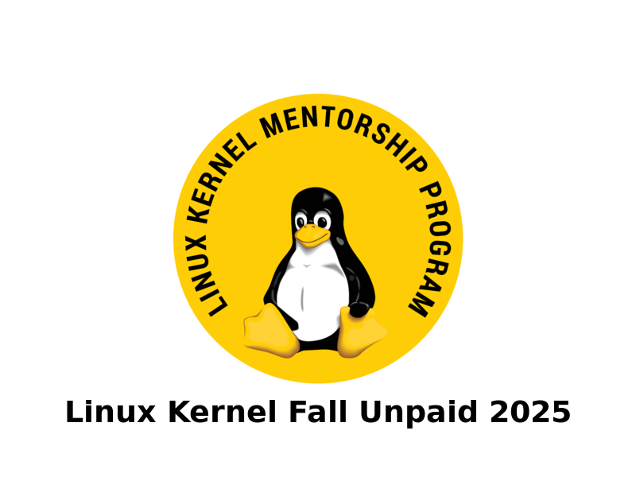

Blog #1
15 min read
Linux Kernel Mentorship Experience
Three months with the Linux Kernel Fall Unpaid 2025 program: contributing patches to IIO and Media subsystems, learning upstream development practices, and seeing code merged into mainline. A journey through Device Tree bindings, interrupt handling, and kernel development workflows.